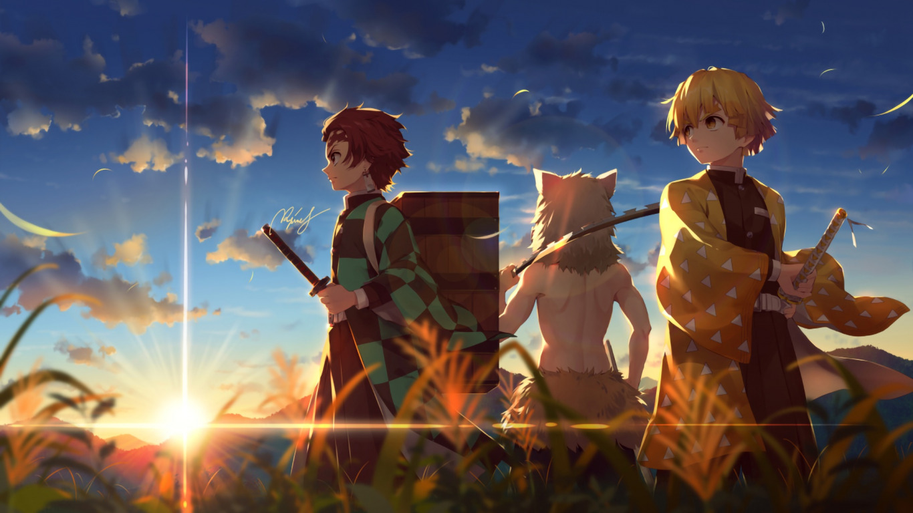
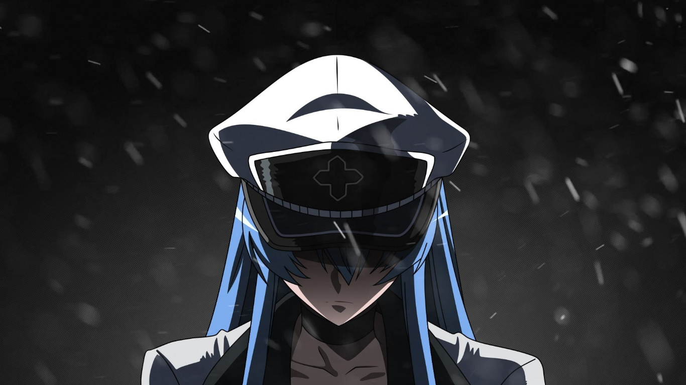
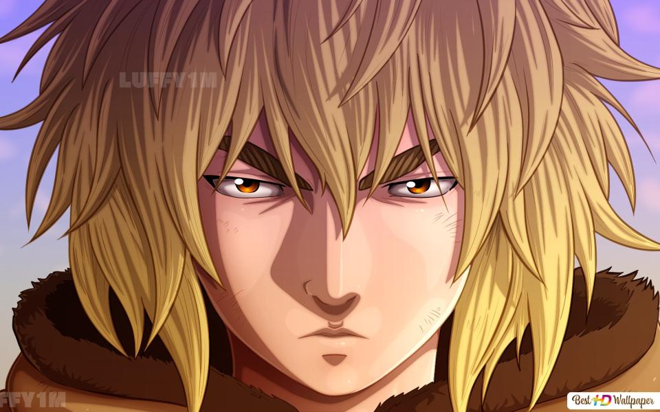

Top 3 Animes mais assistidos
Olá jovem otako, se você se encontra perdido em qual anime começar, vamos a algumas recomendações.
Em 3º Lugar
Kimetsu no Yaiba
-
Em Kimetsu no Yaiba, Tanjiro, um bondoso jovem que ganha a vida vendendo carvão descobre que sua família foi massacrada por um demônio. Arrasado com essa sombria realidade, Tanjiro decide se tornar um matador de demônios para fazer sua irmã voltar a ser humana e para destruir o demônio que matou seus entes queridos. A série se destaca pelas belíssimas animações e pelos personagens carismáticos, apesar da narrativa seguir o manual básico dos animes do estilo: jovem improvável em uma jornada cheia de superação para se tornar um herói, que conhece companheiros e vai aprimorando suas habilidades.

Akame Ga Kill
-
A história se foca em Tatsumi, um jovem aldeão que viajou para a capital em busca de dinheiro para a sua vila e descobre uma forte corrupção naquela área. Uma assassina (Leone) do grupo Night Raid recruta o jovem garoto para ajudá-los na luta contra o Império para dar fim a corrupção.

Viland Saga
-
Thorfinn é filho de um dos maiores guerreiros vikings, mas quando o seu pai é morto na batalha contra o mercenário Askeladd, ele jura vingança. Thorfinn se junta ao grupo de Askeladd para um dia desafiá-lo para um duelo e derrotá-lo, mas acaba se envolvendo na guerra pela coroa da Inglaterra.
